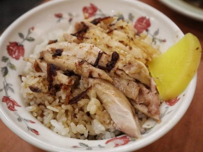
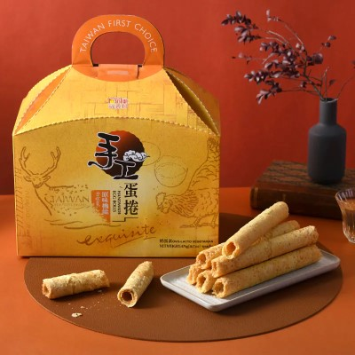
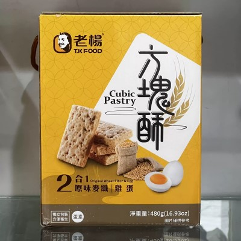

| 民主火雞肉飯 | |
傳統的料理法為在白飯上鋪上火雞肉，再淋上雞汁跟豬油而成，但不同的店家做法會略有不同。雖然隨著文化擴散，台灣各縣市都可以看到販售火雞肉飯的餐飲店，但大多會打出「嘉義」的名號。 傳統的嘉義火雞肉飯主要選用火雞肉當作素材，而雞汁則是以全雞蒸煮所熬成的醬汁，加上酥炸過紅蔥頭的豬油，混合雞肉和白飯攪拌，味道香而不膩；傳統店家會在火雞肉上頭再撒些油蔥酥，讓整體的香味更富有層次，一般則是會配一片醃製的黃色蘿蔔乾，相當下飯。
|
 |
| 福義軒蛋捲 | |
1951年以福義軒製菓創立於嘉義，為嘉義歷史悠久的餅乾製造廠，從創立至今，福義軒創造出許多美味熱銷的明星商品，陪大家走過一甲子的歲月。 因為秉持傳統，堅持手作，將最新鮮的商品送到消費者手上，所以我們部份商品產能受限僅能限量銷售，但福義軒的用心消費者感受到了，送到消費者手上的每一片餅乾充滿了我們的用心與誠意，我們深信唯有堅持產品品質才能獲得客戶的認同。 |
 |
| 老楊方塊酥 | |
老楊食品將創新的精神融入至傳統美食之中，希望將文化的傳承與對鄉土的熱愛發揚出去，於2016年成立「老楊方城市觀光工廠」為全台第一間方塊酥食品觀光工廠，擁有3500坪腹地，結合商場、生產線、娛樂的三合一之複合式經營，屬於一個寓教娛樂性質的食品觀光工廠。 老楊方塊酥於1979年創立在嘉義市民國路上，品牌名稱是為了感念早期教導其麵食技術的楊姓師傅，方以「老楊」命名。草創期由於當時特殊的時空背景，在民國路附近是大面積的眷村，也使這個區域成為南北口味匯集處、居民口中的麵食街；而方塊酥改良自台灣早期眷村的燒餅。為了能方便取食，且更加酥脆易存放，於是改良出「方塊酥」產品。 |
 |
| 資料來源：維基百科 | |